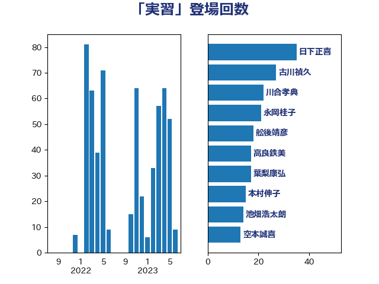

単語「実習」

| 日下正喜 | 公明党 | 35 回 |
| 古川禎久 | 自由民主党 | 27 回 |
| 川合孝典 | 国民民主党 | 22 回 |
| 永岡桂子 | 自由民主党 | 21 回 |
| 舩後靖彦 | れいわ新選組 | 18 回 |
| 高良鉄美 | 無所属 | 17 回 |
| 葉梨康弘 | 自由民主党 | 17 回 |
| 本村伸子 | 日本共産党 | 15 回 |
| 池畑浩太朗 | 日本維新の会 | 14 回 |
| 空本誠喜 | 日本維新の会 | 13 回 |
| 齋藤健 | 自由民主党 | 11 回 |
| 鈴木庸介 | 立憲民主党 | 10 回 |
| 岬麻紀 | 日本維新の会 | 9 回 |
| 青山大人 | 立憲民主党 | 8 回 |
| 後藤茂之 | 自由民主党 | 7 回 |
| 萩生田光一 | 自由民主党 | 6 回 |
| 竹内真二 | 公明党 | 6 回 |
| 梅村聡 | 日本維新の会 | 6 回 |
| 梅村みずほ | 日本維新の会 | 6 回 |
| 山本香苗 | 公明党 | 6 回 |
| 山崎正恭 | 公明党 | 6 回 |
| 古賀千景 | 立憲民主党 | 6 回 |
| 野間健 | 立憲民主党 | 5 回 |
| 神田潤一 | 自由民主党 | 5 回 |
| 塩田博昭 | 公明党 | 5 回 |
| 倉林明子 | 日本共産党 | 5 回 |
| 高見康裕 | 自由民主党 | 4 回 |
| 高橋光男 | 公明党 | 4 回 |
| 山田俊男 | 自由民主党 | 4 回 |
| 堀内詔子 | 自由民主党 | 4 回 |
| 吉川元 | 立憲民主党 | 4 回 |
| 加藤勝信 | 自由民主党 | 4 回 |
| 三宅伸吾 | 自由民主党 | 4 回 |
| 青木愛 | 立憲民主党 | 3 回 |
| 西野太亮 | 自由民主党 | 3 回 |
| 西岡秀子 | 国民民主党 | 3 回 |
| 寺田静 | 無所属 | 3 回 |
| 伊藤孝恵 | 国民民主党 | 3 回 |
| 中条きよし | 日本維新の会 | 3 回 |
| 中川正春 | 立憲民主党 | 3 回 |
| 谷合正明 | 公明党 | 2 回 |
| 米山隆一 | 立憲民主党 | 2 回 |
| 簗和生 | 自由民主党 | 2 回 |
| 浜野喜史 | 国民民主党 | 2 回 |
| 松野明美 | 日本維新の会 | 2 回 |
| 斎藤嘉隆 | 立憲民主党 | 2 回 |
| 島村大 | 自由民主党 | 2 回 |
| 山口那津男 | 公明党 | 2 回 |
| 天畠大輔 | れいわ新選組 | 2 回 |
| 城井崇 | 立憲民主党 | 2 回 |
| 上田清司 | 国民民主党 | 2 回 |
| 一谷勇一郎 | 日本維新の会 | 2 回 |
| 鰐淵洋子 | 公明党 | 1 回 |
| 長友慎治 | 国民民主党 | 1 回 |
| 野村哲郎 | 自由民主党 | 1 回 |
| 道下大樹 | 立憲民主党 | 1 回 |
| 藤木眞也 | 自由民主党 | 1 回 |
| 茂木敏充 | 自由民主党 | 1 回 |
| 羽田次郎 | 立憲民主党 | 1 回 |
| 篠原豪 | 立憲民主党 | 1 回 |
| 窪田哲也 | 公明党 | 1 回 |
| 礒崎哲史 | 国民民主党 | 1 回 |
| 石川香織 | 立憲民主党 | 1 回 |
| 石井正弘 | 自由民主党 | 1 回 |
| 田中健 | 国民民主党 | 1 回 |
| 渡辺博道 | 自由民主党 | 1 回 |
| 浜地雅一 | 公明党 | 1 回 |
| 浜口誠 | 国民民主党 | 1 回 |
| 池田佳隆 | 自由民主党 | 1 回 |
| 横山信一 | 公明党 | 1 回 |
| 根本幸典 | 自由民主党 | 1 回 |
| 柴山昌彦 | 自由民主党 | 1 回 |
| 柳ヶ瀬裕文 | 日本維新の会 | 1 回 |
| 末松信介 | 自由民主党 | 1 回 |
| 徳永エリ | 立憲民主党 | 1 回 |
| 岸田文雄 | 自由民主党 | 1 回 |
| 友納理緒 | 自由民主党 | 1 回 |
| 保岡宏武 | 自由民主党 | 1 回 |
| 佐藤英道 | 公明党 | 1 回 |
| 伊佐進一 | 公明党 | 1 回 |
| 三浦信祐 | 公明党 | 1 回 |